<title>Cepo: ronda A/B/C</title>
<meta name="claude:viewport-fit-sides" content="cover">
<style>
/* Una columna, lectura en móvil: cada opción es una tarjeta con su imagen a 4x */
:root{--bg:#1b1916;--panel:#26231f;--fg:#e8e2d6;--mute:#a39a8b;--accent:#c9a46a;--line:#3a352e;color-scheme:dark;
--display:"Cinzel",Georgia,serif;--body:"Inter",system-ui,sans-serif}
body{background:var(--bg);color:var(--fg);font-family:var(--body);line-height:1.5}
main{max-width:720px;margin:0 auto;padding-block:24px 48px;padding-left:max(16px,env(safe-area-inset-left,0px));padding-right:max(16px,env(safe-area-inset-right,0px));display:grid;gap:28px}
h1{font-family:var(--display);font-weight:600;font-size:1.7rem;margin:0;text-wrap:balance}
h2{font-family:var(--display);font-size:1.15rem;margin:0;color:var(--accent);letter-spacing:.03em}
p{margin:0;max-width:65ch}
.mute{color:var(--mute)}
section{display:grid;gap:10px}
img{image-rendering:pixelated;display:block;width:100%;border:1px solid var(--line);border-radius:4px;background:#000}
.pair{display:grid;grid-template-columns:1fr 1fr;gap:10px}
.pair figure,.opt figure{margin:0;display:grid;gap:4px;min-width:0}
figcaption{font-size:.8rem;color:var(--mute);text-transform:uppercase;letter-spacing:.08em}
.opts{display:grid;grid-template-columns:repeat(3,1fr);gap:12px}
@media (max-width:560px){.opts{grid-template-columns:1fr}}
.opt{background:var(--panel);border:1px solid var(--line);border-radius:6px;padding:12px;display:grid;gap:8px;align-content:start}
.opt b{font-family:var(--display);font-size:1.3rem;color:var(--accent)}
.scroll{overflow-x:auto}
.scroll img{min-width:640px}
</style>
<link rel="stylesheet" href="https://fonts.googleapis.com/css2?family=Cinzel:wght@600&family=Inter:wght@400;600&display=swap">
<main>
<header style="display:grid;gap:8px">
<h1>Cepo de la galería del cofre</h1>
<p class="mute">Todo capturado de la ROM, sala 4, a 4x.</p>
</header>

<section>
<h2>Ronda 2: madera oscura y contraste por material</h2>
<p>Las tres van giradas a 3/4 y a 40 px. La madera se oscurece, los herrajes se aclaran hacia plata y la sangre se oscurece.</p>
<div class="opts">
<div class="opt"><b>A</b><figure>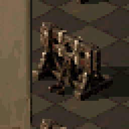</figure><p>Suave. Todavía se ve madera tostada.</p></div>
<div class="opt"><b>B</b><figure>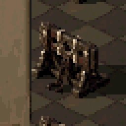</figure><p>Media. Madera oscura, con los herrajes marcados.</p></div>
<div class="opt"><b>C</b><figure>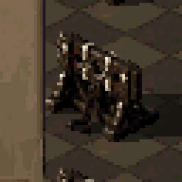</figure><p>Fuerte. Madera casi negra, con herrajes plateados finos.</p></div>
</div>
<div class="scroll">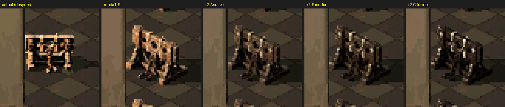</div>
<figure style="margin:0;display:grid;gap:4px;max-width:256px">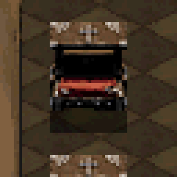<figcaption>Referencia: el reclinatorio</figcaption></figure>
<p class="mute">Los herrajes ocupan pocos píxeles a este tamaño, así que el metal se ve como puntos claros sueltos. El óxido de la cadena se oscurece junto con la sangre.</p>
</section>

<h2 style="font-size:1.4rem;margin-top:12px">Ronda 1</h2>

<section>
<h2>Antes y después del último cambio</h2>
<div class="pair">
<figure>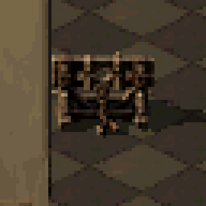<figcaption>Antes</figcaption></figure>
<figure>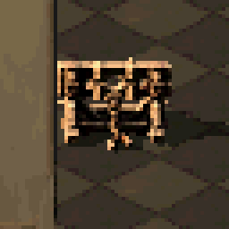<figcaption>Después (actual)</figcaption></figure>
</div>
<p>El cambio solo subió el brillo y el contraste, y por eso sale anaranjado. El giro «de frente» se apuntó pero nunca se aplicó. Además, de frente total el cepo se ve plano: los agujeros salen pequeños y oscuros y no se distinguen.</p>
</section>

<section>
<h2>Cómo es el modelo</h2>
<div class="scroll">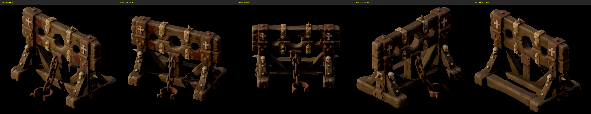</div>
<p class="mute">El tercero es el ángulo que se usa ahora. Visto en tres cuartos (el primero), los tres agujeros grandes se reconocen.</p>
</section>

<section>
<h2>Opciones</h2>
<div class="opts">
<div class="opt"><b>A</b><figure>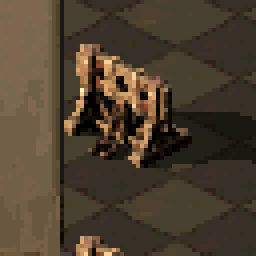</figure><p>Girado a tres cuartos, con color de madera apagado. Mismo tamaño que ahora.</p></div>
<div class="opt"><b>B</b><figure>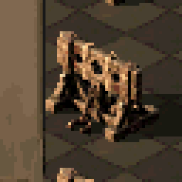</figure><p>Como A, pero un 25 % más grande. Ocupa más hueco en la sala.</p></div>
<div class="opt"><b>C</b><figure>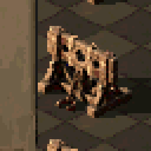</figure><p>Como B, con los agujeros oscurecidos. Se nota poco frente a B.</p></div>
</div>
</section>

<section>
<h2>Las cinco juntas</h2>
<div class="scroll">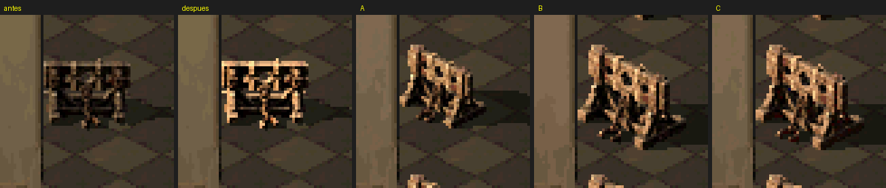</div>
</section>

<section>
<h2>C en la sala completa</h2>
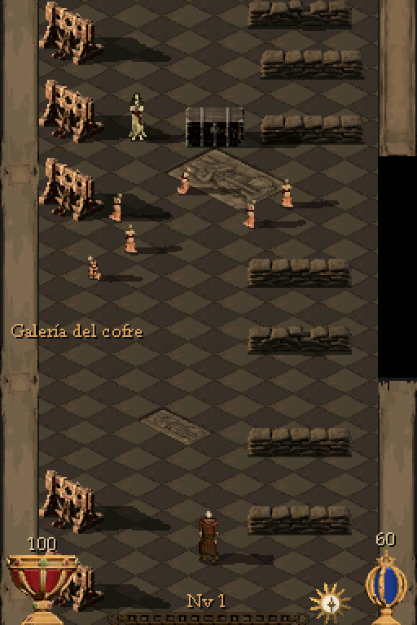
</section>
</main>
